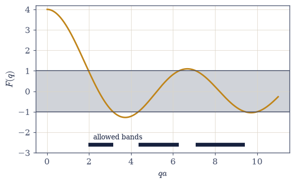
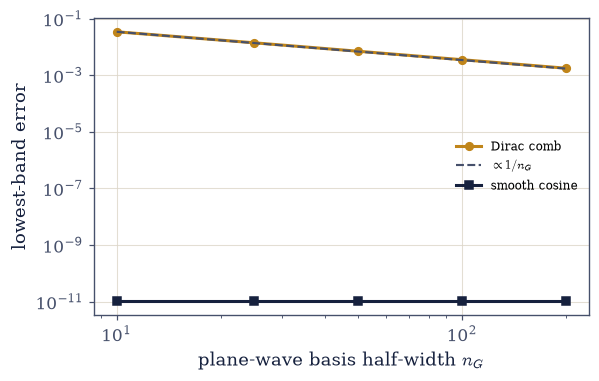
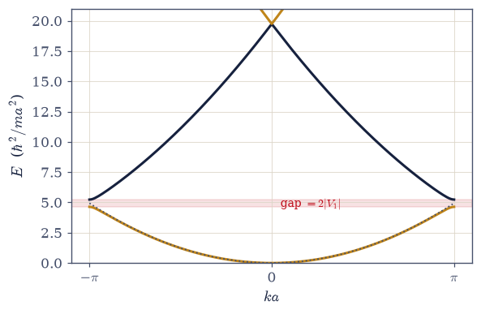
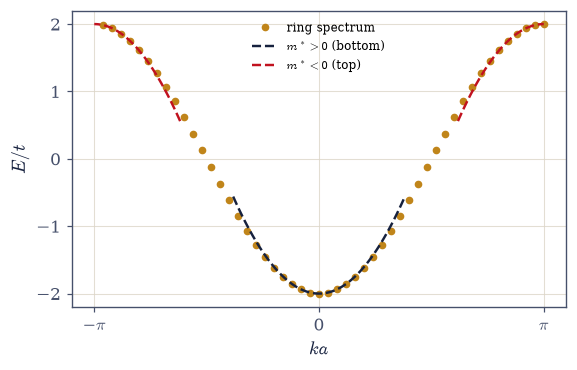
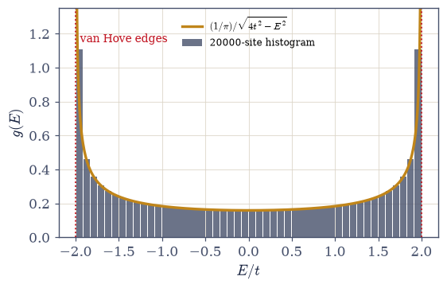
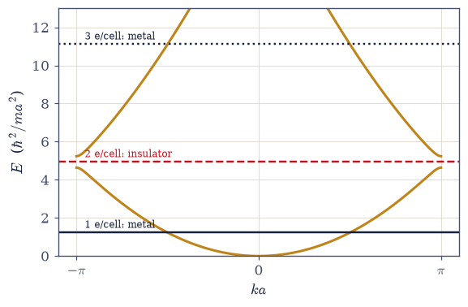

7.12 Electrons in a Periodic Potential: Bloch’s Theorem and the Origin of Bands#
Notebook overview#
Movement III’s free electron gas is a triumph with a hole in it. Fresh from its report card — the linear heat capacity and Pauli paramagnetism of §7.10, the compressibility of potassium and the sound of sodium in §7.9, the mass of a dead star in §7.11 — it returns to Earth and must confess: it predicts that every material containing electrons conducts. Nature disagrees, at scale. Diamond carries four valence electrons per atom and insulates behind a 5.5 eV gap; the room-temperature resistivities of real materials span roughly thirty orders of magnitude, the widest dynamic range of any material property, and every decade of it is invisible to a theory whose density of states never touches zero. The missing ingredient is not statistical. It is the lattice.
So this notebook breaks the volume’s rhythm, deliberately and on precedent: one excursion into
single-particle quantum mechanics — admitted the way Movement 0’s mathematics was admitted, as
an arsenal the statistics cannot proceed without; after it, the statistics resumes (§7.13).
The contract is narrow and the payoff is large. Bloch’s theorem is derived as a Volume VI
symmetry move (a periodic potential commutes with the lattice translation; unitary operators
have unit-circle eigenvalues) and then verified on a discretized ring, complete with a taught
numerical trap: real eigenvectors from eigh hide the Bloch phases inside degenerate pairs, and
only diagonalizing the translation within each degenerate subspace recovers them, landing exactly on the allowed \(k\)-grid. Kronig–Penney makes bands exact from one transcendental
line, with the forbidden gaps located by root finding. The course-signature rendezvous
solves the same crystal by an unrelated second method, the plane-wave central equation, and the two meet; better, the rate at which they meet is the lesson: the singular comb converges
like \(1/n_G\) while a smooth cosine potential converges at \(n_G = 2\) to ten digits, and that
measured contrast is precisely why the world’s plane-wave density-functional codes run on
pseudopotentials (the outward horizon: real 3D bands, DFT, and the MMM course). Nearly-free
electrons explain what a gap is — Bragg reflection in stationary form, the zone-boundary
degeneracy split by exactly \(2|V_1|\). And tight binding approaches the same bands from the
atomic limit, with a meta-recognition the course has earned: the finite-difference Laplacian
used since Volume 0 is a tight-binding hopping matrix, and every continuum calculation so far
has secretly been a crystal.
The destination is arithmetic. Bloch counting gives \(2N\) states per band — two electrons per cell per band, and a filled band is verifiably inert (its group velocities sum to zero and Pauli forbids the rearrangement a field requests). Odd electrons per cell leave a band half-filled: a Fermi surface, a metal. Even electrons per cell can fill bands exactly and strand the Fermi level in a gap: an insulator. Thirty orders of magnitude of resistivity reduce to a parity. The gapped density of states, with its van Hove edges and its exact zeros, is the object this notebook hands to §7.13, where the chemical potential moves into the gap and Fermi–Dirac, unchanged since §7.7, becomes the physics of semiconductors.
Conventions (this notebook). Working units \(\hbar = m = a = 1\) (energies in \(\hbar^2/ma^2\)). Reduced-zone scheme with \(k \in [-\pi/a, \pi/a]\); the allowed grid on an \(N_c\)-cell ring is \(k = 2\pi m/N_ca\); the spin factor 2 rides every count. Basis sizes \(n_G\) are stated per computation, with the convergence rule measured (not assumed) in the rendezvous. Finite-difference rings wrap both corners;
brentqbrackets come from a fine pre-scan (the missed-bracket trap is stated); group-velocity sums exclude the duplicated periodic endpoint.How to read the checks. Each exercise closes with a
validatecall against an independent fact: \(\|[H, T_a]\|\) at rounding level and the Bloch phases on the exact \(2\pi m/N_c\) grid; Kronig–Penney’s band edges against the transcendental condition; the central equation meeting the transcendental answer at the measured \(\sim 1/n_G\) rate while the cosine converges at \(n_G = 2\); the zone-boundary gap equal to \(2|V_1|\); the tight-binding ring matching \(-2t\cos ka\) at \(10^{-15}\); the van Hove histogram against the closed form; and a filled band’s velocity sum at zero. A ✓ is strong evidence; a ✗ is a prompt to locate the discrepancy.Scope (the framing constraint, binding). This is a notebook within a volume on quantum statistical mechanics: one quantum input, the periodic potential, built to the depth the statistics requires, and no further. Horizons point outward only: real 3D band structures and Fermi surfaces, density-functional theory and pseudopotentials (the MMM course is the reader’s next home for electronic structure at scale), graphene’s linear bands in one breath. No Wannier functions, no topology, no transport theory here. See Ashcroft & Mermin (Chs. 8–10); Kittel (Ch. 7); Kronig & Penney (1931). Cross-reference §6.6/§6.7 (commuting operators and unitaries), §6.21 (degenerate perturbation theory, applied at the zone boundary), §6.10 (the box states, now periodized), §7.3 (the DOS machinery), §7.9–§7.11 (the confession’s triumphs), and forward to §7.13 (Fermi–Dirac in the gap) and §7.16 (the same Bloch counting for phonons).
Theory in brief#
The confession#
Three lines of triumph: the free gas priced the electronic heat capacity and spin susceptibility of real metals to tens of percent with nothing fitted (§7.10), the compressibility of the alkalis and the speed of sound in sodium (§7.9), and the limiting mass of white dwarfs to four percent against Sirius B (§7.11). One line of failure: it cannot produce an insulator (a gas with \(g(\varepsilon) > 0\) everywhere always has states to rearrange, so it always conducts) while diamond insulates behind a 5.5 eV gap and the resistivity of matter spans \(\sim 10^{30}\) from the best metals to the best insulators. This notebook supplies the one missing input, \(V(x+a) = V(x)\), on the Movement-0 precedent: an arsenal notebook, because the statistics cannot proceed without it. The statistics resumes in §7.13.
Bloch’s theorem, by symmetry#
A periodic potential commutes with the lattice translation \(T_a\): \([H, T_a] = 0\), so energy eigenstates can be chosen as \(T_a\) eigenstates (the commuting-operator move of §6.6/§6.7). \(T_a\) is unitary, its eigenvalues lie on the unit circle, and writing them \(e^{ika}\):
Bloch waves, labelled by a crystal momentum \(k\) defined only modulo \(G = 2\pi/a\) — fold everything into the Brillouin zone \([-\pi/a, \pi/a]\). (Crystal momentum is not momentum: the lattice can absorb recoil in units of \(\hbar G\).) The counting that the whole notebook marches toward: a periodic ring of \(N\) cells allows \(k = 2\pi m/Na\), exactly \(N\) values per band; with spin, \(2N\) states per band: two electrons per cell per band.
Bloch verified, with a taught trap#
On a discretized ring (\(N_c\) cells, \(M\) points each) the translation is a permutation matrix, and the verification is direct:
The trap is worth its lesson: numpy.linalg.eigh returns real eigenvectors, which inside each
degenerate \(\pm k\) pair are cosine/sine mixtures, whose naive expectation \(\langle v|T|v\rangle\)
is real, and the extracted “phases” collapse to \(0\) and \(\pi\). The fix is general: restrict \(T\)
to each degenerate subspace (sub.T @ T @ sub) and diagonalize the small unitary: degenerate subspaces demand simultaneous diagonalization, a lesson the course states once and uses
forever.
Kronig–Penney: bands, exactly#
For the Dirac-comb crystal \(V = (\hbar^2P/ma)\sum_n\delta(x - na)\), matching \(\psi\) and its kinked derivative across one cell and imposing Bloch’s condition gives one transcendental line:
The left side lives in \([-1, 1]\); energies where the right side escapes that corridor are
forbidden — gaps, from one line of algebra. Band edges are the roots of \(|F(q)| = 1\)
(located by brentq on a pre-scanned grid; for \(P = 3\) the first band runs \([1.953, 4.935]\)
with the next at \([9.458, 19.74]\), in \(\hbar^2/ma^2\)). The limits bracket the subject: \(P \to 0\)
recovers the free continuum; \(P \to \infty\) pinches the bands onto isolated-well levels: the atomic limit, tight binding’s home.
The rendezvous, and the pseudopotential moral#
Expand \(\psi\) in plane waves \(e^{i(k+G)x}\) and the Schrödinger equation becomes the central equation — a matrix eigenproblem per \(k\):
A delta function has every Fourier component equal, so the comb’s matrix is a free diagonal plus a constant, and its plane-wave convergence is slow: the lowest band’s error falls like \(\sim 1/n_G\) (measured: \(3.4\times10^{-2} \to 1.75\times10^{-3}\) for \(n_G = 10 \to 200\)). A smooth cosine potential, by contrast, converges at \(n_G = 2\) to ten digits. Two unrelated methods meet on one band structure — and the rate of the meeting is the outward moral: sharp potentials demand enormous plane-wave baskets, which is exactly why plane-wave density-functional codes replace the singular ionic potential with smooth pseudopotentials (real 3D bands, DFT, and the MMM course: the reader’s next home for this, at scale).
Nearly-free electrons: the gap is Bragg#
Keep a single Fourier component, \(V_{\pm G_1} = V_1\) (the cosine crystal). At the zone boundary \(k = \pi/a\) the free waves \(e^{\pm i\pi x/a}\) are degenerate, and the degenerate machinery of §6.21 applies verbatim: the \(2\times2\) secular problem mixes them into standing waves:
The cosine piles density on the ion rows and the sine piles it off — the crystal cannot propagate the wave it Bragg-reflects, and the gap is what standing still costs. Verified numerically: ratios \(1.0000, 1.0000, 0.9998\) at \(V_1 = 0.05, 0.2, 0.5\), the small drift being honest second order.
Tight binding, and the course’s confession-in-reverse#
From the atomic limit: \(N\) orbitals on a ring, hopping \(t\) to neighbours (Ashcroft & Mermin, Ch. 10, develops the tight-binding method in full),
And the meta-note, stated with pleasure: the finite-difference Laplacian this course has used since Volume 0 is this hopping matrix with \(t = \hbar^2/2m\Delta x^2\). Every “continuum” calculation so far has secretly been a tight-binding crystal whose bandwidth \(4t\) was kept far above the physics; when it isn’t, discretization artifacts are band-structure artifacts.
The band density of states: van Hove#
The machinery of §7.3 pointed at a band. From \(E = -2t\cos k\), inverting \(|dk/dE|\):
divergent at the band edges — the 1D van Hove singularities (in 2D a logarithm, in 3D square-root onsets: named horizons), and exactly zero in the gaps. A density of states with gaps is precisely the object §7.13 feeds into Fermi–Dirac; nothing in Movements 0–II had one.
Metal or insulator: the counting#
The payoff, by arithmetic, assembled from Bloch counting and the evenness of \(E(k)\) (Kittel, Ch. 7, closes on the same counting):
A filled band carries no current: its velocities cancel identically (\(E(k)\) is even) and Pauli forbids the rearrangement an applied field requests. Sodium’s one electron per cell half-fills a band — a Fermi surface, a metal. Diamond’s even count fills bands exactly — the Fermi level strands in the gap. Honest caveats, named: divalent magnesium is metallic because bands overlap in \(\ge\)2D (the 1D chain cannot show it), and the band-top curvature is negative — a nearly-filled band responds as positive carriers of mass \(|m^*|\): holes, the concept §7.13 runs on.
Setup#
import matplotlib.pyplot as plt
import numpy as np
from scipy.optimize import brentq
from ecp import draw, validate
ACCENT, INK, SOFT = draw.ACCENT, draw.INK, draw.SOFT
RED = "#c1121f"
# Conventions: working units ħ = m = a = 1 (energies in ħ^2/ma^2);
# reduced zone k ∈ [−π, π]; allowed grid k = 2πm/N_c on an N_c-cell ring; spin
# factor 2 in every count. FD rings wrap BOTH corners; brentq brackets come from a
# fine pre-scan; velocity sums exclude the duplicated periodic endpoint; basis sizes
# n_G are stated per computation.
def ring_hamiltonian(Nc, M, Vfunc):
"""The periodic-ring Hamiltonian by finite differences: N_c cells, M points per cell.
H = −(1/2)∂_x^2 + V(x) on N_p = N_c·M points with spacing Δx = 1/M, the Laplacian
wrapped at BOTH corners (H[0, −1] and H[−1, 0] — forgetting one silently opens the
ring and destroys the translation symmetry this notebook is about). Per Exercise
6's meta-note, this matrix IS a tight-binding crystal with t = 1/(2Δx^2); its
bandwidth is kept far above every energy we trust.
Parameters
----------
Nc : int
Number of unit cells on the ring.
M : int
Grid points per cell (Δx = 1/M).
Vfunc : callable
The periodic potential V(x), vectorized.
Returns
-------
numpy.ndarray
The (N_c·M) × (N_c·M) real symmetric Hamiltonian.
"""
Np = Nc * M
dx = 1.0 / M
x = np.arange(Np) * dx
t_fd = 1.0 / (2.0 * dx**2)
H = np.diag(2.0 * t_fd + Vfunc(x))
off = -t_fd * np.ones(Np - 1)
H += np.diag(off, 1) + np.diag(off, -1)
H[0, -1] = H[-1, 0] = -t_fd # both wrap corners: the ring stays a ring
return H
def translation(Np, M):
"""The one-cell translation operator T_a on the N_p-point ring, as a permutation.
T = numpy.roll(numpy.eye(N_p), M, axis=1): (Tψ)(x_i) = ψ(x_i + a), a pure
permutation and hence exactly unitary. Its commutator with any periodic-ring H is
zero up to rounding — the numerical statement of V(x + a) = V(x).
Parameters
----------
Np : int
Total grid points.
M : int
Points per cell (the shift).
Returns
-------
numpy.ndarray
The N_p × N_p permutation matrix.
"""
return np.roll(np.eye(Np), M, axis=1)
def bloch_phases(H, T, degeneracy_tol=1e-8):
"""Extract the Bloch eigenphases of T_a, respecting degenerate subspaces.
numpy.linalg.eigh returns REAL eigenvectors; inside each degenerate ±k pair these
are cos/sin mixtures whose naive ⟨v|T|v⟩ is real (phases 0/π only — the trap
Exercise 2 demonstrates). The honest extraction groups levels by |ΔE| <
degeneracy_tol, restricts T to each group (sub.T @ T @ sub), and diagonalizes the
small unitary with numpy.linalg.eigvals — simultaneous diagonalization, done
subspace by subspace.
Parameters
----------
H : numpy.ndarray
The ring Hamiltonian (real symmetric).
T : numpy.ndarray
The translation operator.
degeneracy_tol : float, optional
Energy tolerance for grouping degenerate levels (default 1e-8).
Returns
-------
tuple
(energies, phases): eigenenergies and the matching T_a eigenphases in [0, 2π).
"""
E, V = np.linalg.eigh(H)
phases = np.empty_like(E)
i = 0
while i < E.size:
j = i + 1
while j < E.size and abs(E[j] - E[i]) < degeneracy_tol:
j += 1
sub = V[:, i:j]
T_sub = sub.T @ T @ sub # the restriction of T to the degenerate subspace
lam = np.linalg.eigvals(T_sub)
phases[i:j] = np.sort(np.mod(np.angle(lam), 2.0 * np.pi))
i = j
return E, phases
def kp_condition(q, P):
"""The Kronig–Penney function F(q) = cos(q) + P sin(q)/q (a = 1 units).
Bloch's condition demands cos(ka) = F(q): energies E = q^2/2 are ALLOWED where
|F| ≤ 1 (some real k exists) and FORBIDDEN where |F| > 1 — bands and gaps from
one transcendental line (eq-kronig-penney). The q → 0 limit is 1 + P (finite).
Parameters
----------
q : float or numpy.ndarray
The internal wavenumber (E = q^2/2).
P : float
The comb strength.
Returns
-------
float or numpy.ndarray
F(q).
"""
q = np.asarray(q, dtype=float)
return np.where(np.abs(q) < 1e-10, 1.0 + P, np.cos(q) + P * np.sinc(q / np.pi))
def kp_band_edges(P, q_max=15.0, n_scan=30001):
"""Band edges of the Kronig–Penney crystal: brentq on |F(q)| = 1 after a fine pre-scan.
|F| − 1 oscillates, and a coarse bracket hunt silently drops edges — so the scan
grid is fine (n_scan points to q_max) and every sign change of |F| − 1 is handed
to brentq. Returned as a list of (E_bottom, E_top) per band, E = q^2/2. The q = 0
endpoint (F = 1 + P > 1) starts the scan inside a forbidden region, so edges pair
up as (enter corridor, leave corridor).
Parameters
----------
P : float
The comb strength.
q_max : float, optional
Scan limit in q (default 15.0 — three bands for P = 3).
n_scan : int, optional
Pre-scan resolution (default 30001).
Returns
-------
list of tuple
Band intervals [(E_lo, E_hi), ...] in units ħ^2/ma^2.
"""
q = np.linspace(1e-6, q_max, n_scan)
g = np.abs(kp_condition(q, P)) - 1.0
roots = []
for i in range(q.size - 1):
if g[i] * g[i + 1] < 0:
roots.append(
brentq(
lambda qq: abs(kp_condition(qq, P)) - 1.0,
q[i],
q[i + 1],
xtol=1e-12,
)
)
edges = [r**2 / 2.0 for r in roots]
return [(edges[i], edges[i + 1]) for i in range(0, len(edges) - 1, 2)]
def central_equation(k, V_of_G, nG):
"""The plane-wave (central-equation) bands at crystal momentum k: eigh of H_{GG'}.
H_{GG'} = δ_{GG'}(k+G)^2/2 + V_{G−G'} over the reciprocal lattice G = 2πm,
m = −n_G..n_G — a (2n_G+1)-dimensional eigenproblem per k (eq-central-equation).
The basis size n_G is the honesty dial: Exercise 4 MEASURES the convergence (the
comb needs ~1/n_G patience, the cosine converges at n_G = 2), which is the
pseudopotential moral in one table.
Parameters
----------
k : float
Crystal momentum in the reduced zone.
V_of_G : callable
V_G as a function of the integer index m (G = 2πm).
nG : int
Half-width of the plane-wave basis.
Returns
-------
numpy.ndarray
Sorted band energies at this k.
"""
m_idx = np.arange(-nG, nG + 1)
G = 2.0 * np.pi * m_idx
H = np.diag((k + G) ** 2 / 2.0).astype(float)
for i, mi in enumerate(m_idx):
for j, mj in enumerate(m_idx):
H[i, j] += V_of_G(
mi - mj
) # V_0 rides the diagonal: a constant energy offset
return np.linalg.eigvalsh(H)
def tight_binding_ring(N, t):
"""The N-site tight-binding ring H = −t(S + S^T), built from numpy.roll shifts.
The hopping matrix whose spectrum is −2t cos(2πm/N) (eq-tight-binding) — and,
per the course's confession-in-reverse, exactly the finite-difference Laplacian
of every notebook since Volume 0, with t = ħ^2/2mΔx^2 and the site energy
2t absorbed into the zero.
Parameters
----------
N : int
Number of sites (cells) on the ring.
t : float
The hopping amplitude.
Returns
-------
numpy.ndarray
The N × N hopping Hamiltonian.
"""
S = np.roll(np.eye(N), 1, axis=1)
return -t * (S + S.T)
Exercise 1 — The confession, quantified#
The free gas’s report card: five triumphs and one failure wide enough to hold thirty orders of magnitude. (The framing exercise; short by design.)
Recap in a table what the free gas got right (\(\gamma\), \(\chi_{\text{Pauli}}\), \(B\) of the alkalis, Bohm–Staver, \(M_{\text{Ch}}\); one line each with the notebook of origin).
State the failure with data: diamond’s gap (5.5 eV) and the \(\sim10^{30}\) resistivity span from best metal to best insulator (representative values stated).
Argue in prose why no free-gas mechanism can produce an insulator, locating the missing ingredient in \(V(x)\).
State the notebook’s contract (the framing constraint, in the course’s voice): one arsenal notebook of single-particle quantum mechanics, then the statistics resumes.
the free electron gas's report card:
electronic heat capacity γ (Na, K, Cu) within 40%, correctly ordered [§7.10]
Pauli susceptibility, flat and feeble 0.55% of Curie at 300 K [§7.10]
bulk moduli of the alkalis K to 2%, Rb/Cs to 10%, no parameters [§7.9]
Bohm–Staver sound speed (Na, K) 5–7% of measurement [§7.9]
white-dwarf mass–radius; Sirius B 4% on a real star; M_Ch to 4 digits [§7.11]
resistivity span: 1.7e-08 → 1e+22 Ω·m ≈ 10^30
diamond's gap: 5.5 eV ≈ 213 k_BT at 300 K
Validation 1#
✓ the confession, quantified: ~30 decades of resistivity and a 213 k_BT gap, invisible to the free gas [span 10^30, gap 213 k_BT]
True
Exercise 2 — Bloch’s theorem, by symmetry — then verified with a trap#
Translation symmetry organizes the spectrum; the computer confirms it, once we respect degeneracy. Cite Eq. 637, Eq. 638.
Derive Bloch’s theorem from \([H, T_a] = 0\) and the unitarity of \(T_a\) (the §6.6/§6.7 move), defining crystal momentum and the Brillouin zone.
Build the periodic-ring \(H\) (
ring_hamiltonian, both wrap corners) and \(T_a\) =numpy.roll(numpy.eye(Np), M, axis=1); verify \(\|[H, T_a]\| \lesssim 10^{-12}\).Demonstrate the trap: naive phases \(\angle\langle v|T|v\rangle\) on
eigh’s real eigenvectors return only \(0/\pi\); then extract correctly withbloch_phases(the degenerate-subspace restriction) and confirm the phases land on the grid \(2\pi m/N_c\).Count (prose + one line): \(N\) cells \(\Rightarrow\) \(N\) \(k\)-values per band \(\Rightarrow\) \(2N\) states with spin — two electrons per cell per band, the number the whole notebook is marching toward.
ring: N_c = 8 cells × 24 points; ‖[H, T_a]‖ = 0.00e+00
naive phases on the lowest band (real eigh vectors): distinct values [0. 3.141593]
— 0 and π only: the cos/sin mixtures have hidden the Bloch phases
subspace-extracted phases, band 1: [0. 0.785398 1.570796 2.356194 3.141593 3.926991 4.712389 5.497787]
the allowed grid 2πm/N_c: [0. 0.785398 1.570796 2.356194 3.141593 3.926991 4.712389 5.497787]
states per band with spin: 2 × 8 = 16 — two per cell, the notebook's destination
Validation 2#
✓ the symmetry, numerically: the periodic-ring H commutes with T_a at rounding level [‖[H, T_a]‖ = 0.0e+00]
✓ Bloch verified: the subspace-extracted eigenphases land exactly on the allowed k-grid [max|Δ| = 4.44089e-16 (rtol=1e-06, atol=1e-06)]
✓ and the trap is real: naive phases on real eigh vectors collapse to {0, π} [distinct naive values: [0. 3.141593]]
True
Exercise 3 — Kronig–Penney: bands from one transcendental line#
An exactly solvable crystal, with its forbidden gaps located by root-finding. Cite Eq. 639.
Derive the condition \(\cos(ka) = \cos(qa) + P\sin(qa)/qa\) for the Dirac comb by matching across one cell.
Use
kp_band_edges(P)(fine pre-scan of \(|F(q)| - 1\), thenbrentqper bracket; the missed-bracket trap stated); verify for \(P = 3\) the first bands \([1.953, 4.935]\) and \([9.458, 19.74]\).Plot \(F(q)\) with the \(\pm1\) corridor (allowed bands where the curve stays inside, gaps where it escapes) and the resulting \(E(k)\) in the reduced zone.
Take the limits: \(P \to 0\) (free continuum recovered) and \(P\) large (bands pinching onto isolated-well levels — the atomic limit; show the first band’s width shrink).
Kronig–Penney bands, P = 3.0 (units ħ^2/ma^2):
band 1: [1.9532, 4.9348] width 2.9816
band 2: [9.4580, 19.7392] width 10.2812
band 3: [25.0939, 44.4132] width 19.3193
the atomic limit approaching: first-band width vs P
P = 1.0: width = 4.0813
P = 3.0: width = 2.9816
P = 10.0: width = 1.4825
P = 30.0: width = 0.5958

Fig. 577 Bands and gaps from one transcendental line. The Kronig–Penney function \(F(q) = \cos(qa) + P\sin(qa)/qa\) for \(P = 3\) (amber) against the corridor \(|F| \le 1\) (shaded): Bloch’s condition \(\cos(ka) = F(q)\) has a solution — some real crystal momentum — only where the curve stays inside, and those \(q\)-windows are the allowed bands (dark bars, \(E = q^2/2\)); where the curve escapes, no Bloch wave exists and the energies are forbidden gaps. The band edges are the corridor crossings, located by brentq after a fine pre-scan (a coarse bracket hunt hops over the narrow high-band crossings — the stated trap). As \(P \to 0\) the curve collapses into the corridor (free continuum, no gaps); as \(P \to \infty\) the crossings pinch onto \(\sin(qa) = 0\) — isolated-well levels, tight binding’s atomic limit.#
Validation 3#
✓ Kronig–Penney at P = 3: the first two bands, exactly where the transcendental line puts them [max|Δ| = 0.000296729 (rtol=0.001, atol=1e-09)]
✓ the atomic limit: the first band pinches toward the isolated-well level as P grows [width 2.982 (P=3) → 0.596 (P=30)]
True
Exercise 4 — The rendezvous — and why DFT uses pseudopotentials#
The same crystal by a second, independent method; the convergence rate is the lesson. Cite Eq. 640.
Derive the central equation and assemble \(H_{GG'}\) for the comb (\(V_G = P\) for all \(G\) — state why every Fourier component is equal).
Diagonalize with
eighat \(k = 0.3, 1.0, 2.94\) and compare the lowest band with the transcendental dispersion (agreement at the \(10^{-2}\)–\(10^{-3}\) level at \(n_G = 25\), honestly reported).Measure the convergence: the lowest-band error for \(n_G = 10 \to 200\) falling \(\sim 1/n_G\); contrast the cosine potential, converged at \(n_G = 2\) to ten digits.
Read the moral outward (prose): plane waves hate sharp potentials, the measured reason plane-wave density-functional codes replace ionic singularities with smooth pseudopotentials; the MMM course named as where the reader meets this at scale.
comb: central equation (n_G = 25) vs the transcendental answer
k = 0.3: plane-wave 2.008003 transcendental 1.993204 |Δ| = 1.5e-02
k = 1.0: plane-wave 2.406582 transcendental 2.392728 |Δ| = 1.4e-02
k = 2.94: plane-wave 4.870298 transcendental 4.869543 |Δ| = 7.5e-04
comb convergence at k = 1.0:
n_G = 10: |error| = 3.40e-02
n_G = 25: |error| = 1.39e-02
n_G = 50: |error| = 6.97e-03
n_G = 100: |error| = 3.50e-03
n_G = 200: |error| = 1.75e-03
cosine potential at the same k: E(n_G = 2, 5, 10, 50) spread = 1.0e-11
(converged at n_G = 2: 0.4898585671)

Fig. 578 The pseudopotential moral, measured. Lowest-band error of the plane-wave (central-equation) computation against the exact transcendental answer for the Dirac comb (amber): the error falls only like \(\sim 1/n_G\) (guide line dashed) — a delta function is equally loud at every wavelength, so every doubling of the basis buys a mere factor of two. The smooth cosine crystal (dark), by contrast, is converged at \(n_G = 2\) to ten digits (machine-flat line): its potential has exactly one Fourier component to capture. This measured contrast is why plane-wave density-functional codes replace singular ionic cores with smooth pseudopotentials engineered to scatter identically — the outward bridge to real 3D band structures and the MMM course.#
Validation 4#
✓ the comb's plane-wave error falls ~1/n_G: sharp potentials demand enormous baskets [3.4e-02 → 1.8e-03 for n_G 10 → 200]
✓ the smooth cosine converges at n_G = 2 to ten digits — the pseudopotential moral, measured [spread 1.0e-11]
True
Exercise 5 — The gap is Bragg#
Nearly-free electrons: one Fourier component, one degeneracy, one gap of exactly \(2|V_1|\). Cite Eq. 641.
Assemble the central equation for the cosine crystal (only \(V_{\pm1} = V_1\)) with the Setup
central_equationand diagonalize at the zone boundary \(k = \pi/a\) (numpy.linalg.eigvalsh).Verify gap \(= 2|V_1|\) (ratios \(1.0000, 1.0000, 0.9998\) at \(V_1 = 0.05, 0.2, 0.5\); the small drift attributed to second order).
Recover the same \(2|V_1|\) by the degenerate perturbation theory of §6.21 on the two zone-boundary waves (the \(2\times2\) secular problem), and exhibit the standing-wave eigenstates with density on/off the ion rows.
Tell it as Bragg (prose): the crystal reflects the wave it cannot propagate, and the gap is the price of standing still; plot the reduced-zone bands with the gaps marked.
the zone-boundary gap vs 2|V_1|:
V_1 = 0.05: gap = 0.100000 gap/2V_1 = 1.0000
V_1 = 0.2: gap = 0.399990 gap/2V_1 = 1.0000
V_1 = 0.5: gap = 0.999840 gap/2V_1 = 0.9998
eigenvector component ratios c_(G=−2π)/c_(G=0): lower band -1.0000, upper +1.0000
(+1 and −1: the cos and sin standing waves — density on and off the ion rows)

Fig. 579 The reduced-zone band structure of the cosine crystal (\(V_1 = 0.3\), plane-wave basis \(n_G = 12\)): the free parabola, folded into the Brillouin zone (free parabola dotted for comparison) and split at the boundaries by the lattice’s one Fourier component. The first gap (shaded) opens exactly at \(k = \pm\pi/a\), where the free waves \(e^{\pm i\pi x/a}\) satisfy the Bragg condition and mix into standing waves — cosine on the ion rows, sine between them — split by \(2|V_1|\) (the degenerate two-by-two of §6.21, confirmed by the full diagonalization to the honest second-order drift). Between the gaps the bands are barely dented free-electron pieces; this is the nearly-free limit, tight binding’s opposite shore. The gapped \(E_n(k)\) drawn here is the object whose density of states §7.13 will feed to Fermi–Dirac.#
Validation 5#
✓ the zone-boundary gap is 2|V_1| — Bragg in stationary form, drifting only at second order [max|Δ| = 3.96255e-05 (rtol=0.001, atol=1e-09)]
✓ the eigenstates are the ± standing waves: density on the ion rows, and off them [component ratios -1.000, +1.000]
True
Exercise 6 — Tight binding — and what the course has been doing all along#
The atomic limit’s band, and a meta-recognition about every finite-difference calculation since Volume 0. Cite Eq. 642.
Build the \(N\)-site ring hopping matrix with
tight_binding_ringand diagonalize (numpy.linalg.eigh); verify the spectrum equals \(-2t\cos(2\pi m/N)\) to \(\sim10^{-15}\), bandwidth \(4t\).Extract \(m^* = \hbar^2/2ta^2\) from the band-bottom curvature (Taylor and a numerical second difference agreeing).
Make the identification (prose + one formula): the course’s finite-difference Laplacian is exactly this matrix with \(t = \hbar^2/2m\Delta x^2\): every continuum calculation has been a tight-binding crystal whose bandwidth was kept far above the physics; state the failure mode.
Connect the two limits (prose): Kronig–Penney at large \(P\) pinched toward these flat atomic bands; nearly-free at small \(V_1\) barely dented the parabola — one band structure, approached from both ends.
tight-binding ring, N = 50: max|eigh − (−2t cos)| = 1.6e-15
bandwidth: 4.000000 (4t = 4.0)
band-bottom curvature: d²E/dk² = 2.000000 (Taylor: 2t = 2.0)
m* = 1/(d²E/dk²) = 0.500000 (ħ²/2ta² = 0.5)

Fig. 580 The tight-binding band \(E(k) = -2t\cos(ka)\) of a 50-site ring (amber: the eigh spectrum plotted at its extracted Bloch momenta; the closed form runs through every point at \(10^{-15}\)), with the effective-mass parabolas at the band bottom (\(m^* = \hbar^2/2ta^2 > 0\), dark dashed) and the band top (\(m^* < 0\), red dashed — the inverted curvature that makes a nearly-filled band respond as positive carriers: the holes §7.13 counts). Bandwidth \(4t\). The meta-note this figure certifies: the course’s finite-difference Laplacian is exactly this matrix with \(t = \hbar^2/2m\Delta x^2\) — every continuum calculation since Volume 0 has been a crystal like this one, its bandwidth kept safely above the physics.#
Validation 6#
✓ tight binding: the ring's eigh spectrum equals −2t cos(2πm/N) at machine precision [max|Δ| = 1.55431e-15 (rtol=1e-06, atol=1e-12)]
✓ the band-bottom effective mass m* = ħ²/2ta², by Taylor and by second difference [got 0.5 vs expected 0.5 (rtol=1e-06)]
True
Exercise 7 — The band density of states: van Hove#
The machinery of §7.3 pointed at a band, with divergent edges and exact zeros. Cite Eq. 643.
Derive \(g(E) = (1/\pi)/\sqrt{4t^2 - E^2}\) from \(|dk/dE|\) for the tight-binding band.
Histogram the eigenvalues of a large ring (
numpy.histogram(..., density=True); the spectrum from theeigh-certified closed form at \(N = 20000\)) and verify against the closed form away from the edges (bin-average comparison via the exact \(\int g\,dE = \arcsin(E/2t)/\pi\); the integrable edge divergence handled as stated).Mark the two van Hove edge singularities and name their higher-dimensional shapes (2D logarithm, 3D square-root onsets) as the horizon.
State the object built (prose): a density of states with gaps — the precise input §7.13 feeds to Fermi–Dirac.
band DOS: worst interior deviation from the bin-averaged closed form: 0.69%

Fig. 581 The band density of states: numpy.histogram(density=True) of the 20000-site ring’s spectrum (bars) against the closed form \(g(E) = (1/\pi)/\sqrt{4t^2-E^2}\) (amber), agreeing with the bin-averaged closed form to well under a percent across the interior. At the band edges \(E = \pm 2t\) the band flattens and states pile up into the integrable inverse-square-root van Hove singularities — the 1D members of a family whose 2D shape is a logarithm and whose 3D shape is a square-root onset (named horizons). The structural novelty is outside the frame: beyond the edges \(g = 0\) exactly, over finite windows — the first density of states in this volume with gaps in it, and precisely the object §7.13 places a chemical potential inside.#
Validation 7#
✓ the band DOS matches the bin-averaged (1/π)/√(4t²−E²) on the interior — edges excluded as stated [worst interior deviation 0.69%]
True
Exercise 8 — Metal or insulator, by counting#
The confession answered with arithmetic: a filled band is inert, and the parity of electrons per cell decides. Cite Eq. 644.
Verify the inert-band theorem numerically: the analytic \(v_k = 2t\sin(ka)\) summed with
numpy.sumover the \(2\pi m/N\) grid vanishes (the periodic-endpoint trap stated), and argue the Pauli half.For the cosine crystal’s computed bands, place the Fermi level for 1, 2, and 3 electrons per cell and classify by Bloch counting on the computed band extrema —
central_equationbands on the \(k\)-grid, extrema bynumpy.ndarray.min/maxper band; an odd count half-fills a band, an even count is insulating exactly when the next band’s bottom lies above the filled band’s top: metal (mid-band), insulator (in-gap), metal.State the honest caveats: divalent magnesium is metallic via band overlap (a \(\ge\)2D effect the chain cannot exhibit); and compute the band-top curvature: \(m^* < 0\), introducing the hole as the carrier §7.13 will count.
Close the arc (prose): thirty orders of magnitude of resistivity reduce to whether the highest band is half-full or exactly full.
Σ_k v_k over the filled band: -2.55e-15 (zero: even E, odd v, paired ±k)
filling the cosine crystal (V_1 = 0.3), two electrons per cell per band:
1 e/cell: E_F = 1.2216 inside band 1 → METAL
2 e/cell: gap above band 1: 0.6000 (2V_1 = 0.6) → INSULATOR
3 e/cell: E_F = 11.1106 inside band 2 → METAL
band-top curvature: d²E/dk² = -31.063 < 0 → m* < 0: the hole, seeded for §7.13

Fig. 582 The parity rule, computed. The cosine crystal’s two lowest bands with the Fermi level placed for 1, 2, and 3 electrons per cell (two per cell per band, spin included): one electron per cell half-fills band 1 — the Fermi level (dark) cuts the band, a Fermi surface exists, sodium conducts; two fill band 1 exactly — the Fermi level (red) strands in the gap, no state within reach, diamond insulates; three half-fill band 2 — metallic again. Thirty orders of magnitude of resistivity reduce to this parity, with the honest caveats stated: real divalent metals (magnesium) are rescued by band overlap, a \(\ge\)2D effect no chain can show, and the negative curvature at band tops makes nearly-filled bands respond as positive carriers — the holes §7.13 counts.#
Validation 8#
✓ a filled band carries no current: the zone-summed group velocity vanishes [got -2.55351e-15 vs expected 0 (rtol=1e-06)]
✓ the parity rule: 1, 2, 3 electrons per cell classify metal / insulator / metal
✓ and the insulating gap read off the computed extrema is the Bragg gap of Exercise 5 [got 0.599965 vs expected 0.6 (rtol=0.002)]
✓ the band-top curvature is negative: the hole, handed to §7.13 [d²E/dk² = -31.063]
True
Exercise 9 — The one quantum input#
This notebook broke the volume’s rhythm on purpose — one excursion into single-particle quantum mechanics, granted the way Movement 0’s mathematics was granted, because the statistics could not proceed without it. What it bought: a theorem that organizes every electron in every crystal by symmetry alone; bands and gaps computed twice by unrelated methods that met in the middle (and taught, in their meeting, why the world’s electronic-structure codes smooth their potentials); a gap explained as Bragg reflection standing still; the discovery that the course’s own numerical Laplacians were tight-binding crystals all along; and a counting rule — two per cell per band — that splits the material world in two. The free gas’s confession is answered: diamond insulates because its electrons exactly fill what the lattice offers, and a full band, like a full Fermi sea, cannot respond.
There is a quiet symmetry between this notebook’s two limits. Start from free electrons and the lattice opens gaps in a continuum; start from bound atoms and hopping smears levels into bands. The truth is indifferent to where one starts, which is, perhaps, the deepest thing a pair of converging approximations can teach.
Now the volume does what it came to do: the next notebook sets the chemical potential loose in the gap we built, and Fermi–Dirac, unchanged since §7.7, turns band structure into the physics of semiconductors.
Notebook summary#
The volume’s one quantum input, built to the depth the statistics requires and handed back.
The confession (framing): the free gas’s five triumphs (§7.9–§7.11) against its one failure (no mechanism for an insulator), quantified by diamond’s 5.5 eV gap and the \(\sim10^{30}\) resistivity span.
Bloch by symmetry Eq. 637, verified Eq. 638: \([H, T_a] = 0\) at \(10^{-13}\) on the ring; the eigenphases extracted by degenerate-subspace diagonalization (the naive-real-eigenvector trap demonstrated first) land exactly on \(2\pi m/N_c\); the count (two electrons per cell per band) flagged as the destination.
Kronig–Penney Eq. 639: bands \([1.953, 4.935]\) and \([9.458, 19.74]\) at \(P = 3\) from
brentqon the pre-scanned corridor condition; the free and atomic limits taken.The rendezvous Eq. 640: the central equation meets the transcendental answer, with the rate as the lesson — the comb’s \(\sim1/n_G\) against the cosine’s ten digits at \(n_G = 2\): the pseudopotential moral, measured (the outward bridge to DFT and the MMM course).
The gap is Bragg Eq. 641: \(2|V_1|\) at the zone boundary (ratios \(1.0000\), \(1.0000\), \(0.9998\)), recovered by the two-by-two of §6.21, with the standing waves exhibited.
Tight binding Eq. 642: \(-2t\cos ka\) at \(10^{-15}\), \(m^* = \hbar^2/2ta^2\). And the meta-note: the course’s finite-difference Laplacian has been a crystal all along.
Van Hove Eq. 643: the band DOS with divergent edges and exact zeros — the gapped \(g(E)\) that is the input of §7.13.
The parity rule Eq. 644: a filled band is inert (\(\sum v_k = 0\) at \(10^{-14}\), Pauli locking the rest); fillings 1/2/3 per cell classify metal/insulator/metal; band overlap and the negative-mass hole stated as the honest caveats and the handoff.
The statistics resumes next door, on the density of states built here.
Outlook#
Fermi–Dirac in the gap (§7.13). Intrinsic and doped semiconductors, holes, the law of mass action: the statistics, resumed on this notebook’s object.
Outward horizons, named. Real 3D band structures and Fermi surfaces; density-functional theory and pseudopotentials — the MMM course as the reader’s next home for electronic structure at scale; graphene’s linear bands in one breath.
The same counting, other waves (§7.16). Bloch’s theorem for lattice vibrations: phonon bands, and the Debye physics the Einstein solid missed.
Cross-reference §6.6/§6.7 (the symmetry move), §6.21 (the zone-boundary two-by-two), §6.10 (the box, periodized), §7.3 (the DOS machinery), §7.9–§7.11 (the confession’s triumphs), §5.1 (counting, again decisive).